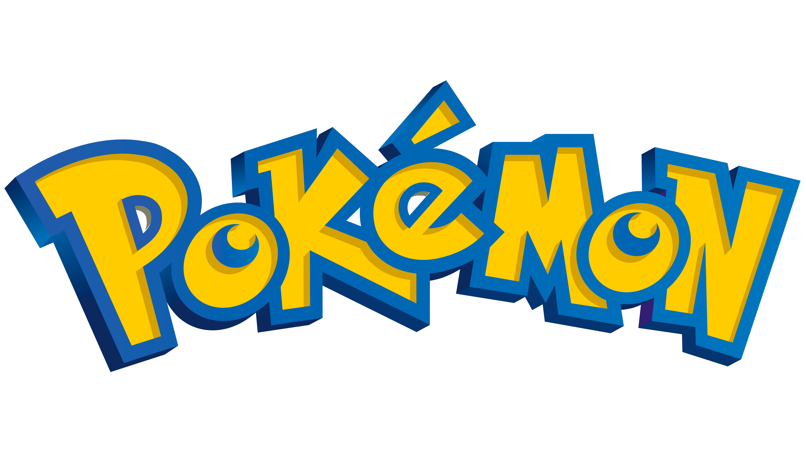

Este portal foi desenvolvido para a cadeira de Introdução ao Desenvolvimento Web do curso de Ciência da Computação da Universidade ULBRA - Gravataí.
Vamos falar por aqui um pouco sobre Pokémon, baseado na sua história, seus Pokémons iniciais, galeria de fotos e pedras evolutivas, todos baseados na sua Primeira Temporada pois foi a que mais assisti e melhor conheço.
Teremos também um formulário de contato direto comigo Felipe Farias, ao entrar em contato pelo mesmo eu receberei um e-mail em minha caixa postal.
Então clica aí nos menus e vamos conhecer juntos um pouco do mundo Pokémon!!
